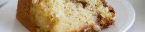

this is a family recipe for sour cream coffee cake. we make this recipe every year for christmas.
batter
Preheat oven to 350 degrees. Grease a tube pan, line the bottom with parchment paper, and grease the paper. You can skip the parchment or use a bundt pan, but this won't result in the caramelized, crispy bottom that brings the cake to another level.
Cream butter and sugar; add eggs and beat well. Add vanilla. Sift dry ingredients together. In alternating thirds, add sour cream and dry ingredients to the butter mixture and beat until smooth. Set aside.
filling
Combine all filling ingredients until you have pea-sized bits of butter. Sprinkle one third of filling on the bottom of the tube pan, top with half the batter, another third of filling, remaining batter, and remaining filling. Bake for 45 minutes. Cool for 10 minutes and remove from the pan. When cool, drizzle with glaze.
glaze
Whisk together all ingredients. Add more powdered sugar and/or milk until you get the desired consistency. I never measure, so these amounts are estimates!
